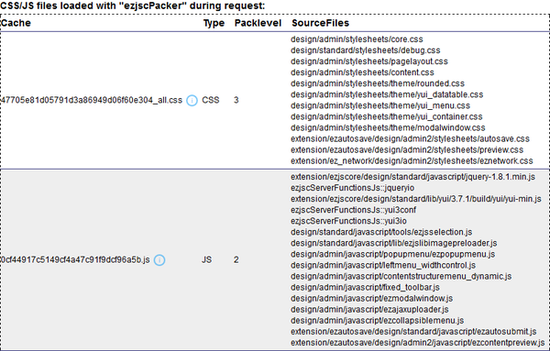

JavaScript and CSS framework
The eZ JS Core extension provides a framework for using Ajax, JavaScript and CSS to allow easier client/server integrations using yui 3.0 and/or jQuery.
Main eZ JS Core features
JavaScript / CSS file dependency handling which enables developers to define the files to load per code block. This supports the loading of only those JavaScript and CSS files that are needed for a particular page.
Packing JavaScript files and CSS files into a single JavaScript or CSS file and thus minimizing the total. This improves the performance by reducing the number and sizes of requests.
A framework is offered to communicate between client and server using the
YUI and
jQuery libraries. Note that with some extra code, any JavaScript library can be supported. This includes wrappers for the respective JavaScript IO calls, and a server-side router framework for the Ajax requests.
Functions (and template operators) to encode eZ Publish nodes and variables to JSON and XML.
For more information regarding use and configuration please read ezjscore: eZ Publish JavaScript and Ajax framework
How to get output information on packed JavaScript and Stylesheet files in eZ Publish debug
The following setting in "site.ini" needs to be enabled in order to get output information on packed javascript and stylesheet files in your debug list.
[TemplateSettings]
ShowUsedTemplates=enabled
Click this link to go to the TemplateSettings in "site.ini".
See example screenshot below:

Powered by eZ Publish™ CMS Open Source Web Content Management. Copyright © 1999-2013 eZ Systems AS (except where otherwise noted). All rights reserved.